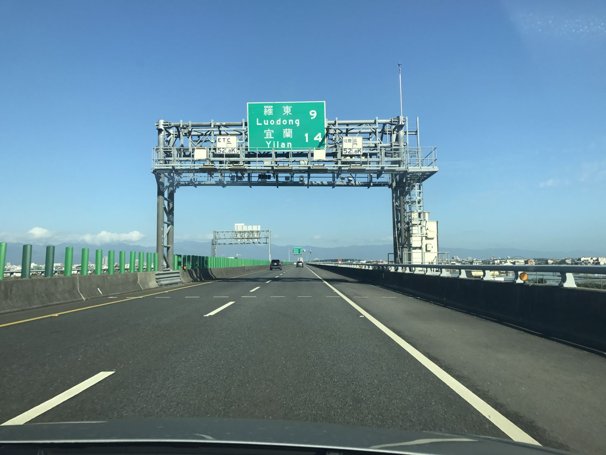

대만 렌터카, 24시간 요금제와 보험은 어떻게 볼까?
차 고르는 것보다 반납 시간과 보험 범위를 먼저 봐야 — 대만 렌터카 계산서가 예상과 달라지지 않아요.
게시
"타이베이에서 아침에 대만 렌터카를 빌려 이란 다녀오면 하루 요금이면 될까?" 대만에서 처음 차를 빌리는 여행자들이 자주 하는 고민이에요. 대만 렌터카 회사 공식 약관과 교통부 공로국 안내를 바탕으로 2026년 10월 기준으로 정리해봤어요.
01 · 대만 렌터카 한눈에 비교하기
| 항목 | 확인할 내용 (和運租車 약관, 2026년 10월 기준) | 체크 포인트 |
|---|---|---|
| 요금 단위 | 하루 = 24시간 | 빌린 시각 기준으로 반납 시각 정하기 |
| 늦은 반납 | 1시간 이상 늦으면 시간당 추가, 6시간 이상이면 하루 추가 | 연장은 반납 전에 미리 연락 |
| 기본 보험 | 차량손해·도난·탑승자·의무 책임보험·제3자 배상 | 자연재해·차 안 물건은 보장 밖 |
| 기타 비용 | 주행거리 기준 유류비, 고속도로 통행료(E-tag), 주차비·과태료 | 반납할 때 정산 |
요금과 보험 자기부담금은 업체·차종·시기마다 달라서 이 글에는 넣지 않았어요. 요금은 방문 전 공식 안내를 확인하세요.

02 · 외국인이 준비할 서류와 국제운전면허
한국 국제운전면허로 운전 가능 대만 외교부에 따르면 2022년 2월 한·대만 국제운전면허 상호인정 각서가 발효됐어요. 교통부 공로국 안내로는 입국 30일 이내 단기 체류면 따로 등록 없이 운전할 수 있어요.
4가지를 함께 챙기기 和運租車는 입국 30일 안에 반납하는 외국인에게 여권, 국제운전면허, 한국 운전면허 원본, 유효기간 6개월 이상 남은 신용카드를 요구해요.
나이 기준도 확인 같은 약관 기준 만 20세 이상이 빌릴 수 있어요. 함께 운전할 사람도 서류를 같이 준비하세요.
03 · 대만 렌터카 보험, 이렇게 고르면 덜 헷갈려요
기본 보장 범위부터 읽기 기본 보장에는 차량손해, 도난, 탑승자, 의무 책임보험, 제3자 배상이 들어가요. 다만 태풍·지진 같은 자연재해와 차 안 물건 분실은 빠져요.
수리 기간 영업손실도 체크 사고로 차를 못 쓰는 기간의 영업손실을 빌린 사람이 부담하는 조항이 있어요. 이 부분까지 덮는 추가 보장이 있는지 카운터에서 물어보세요.
예약 사이트 보험과 비교하기 대행 사이트에서 따로 파는 보험은 현지에서 먼저 내고 나중에 청구하는 방식일 수 있어요. 보장 범위와 청구 방법을 각 약관으로 비교한 뒤 고르세요.
04 · 타이베이→이란 당일치기 체크
반납 시각 역산하기 24시간제라 아침 9시에 빌리면 다음 날 9시가 기준이에요. 당일 반납이면 저녁 교통 체증까지 감안해 여유 있게 잡으세요.
통행료·유류비는 반납 때 정산 고속도로 통행료는 E-tag로 기록돼 반납할 때 함께 내고, 유류비는 주행거리 기준으로 계산돼요.
주차비·과태료는 본인 부담 주차비와 교통 과태료는 빌린 사람이 내요. 다른 지점 반납(甲租乙還)은 예약할 때 신청하고, 차량 사정에 따라 정해져요.
스쿠터는 규정이 따로라 타이중 스쿠터 렌트 면허·보험 글을 참고하세요. 관광지 주차 요령은 지우펀 렌터카 주차 글에 정리해 뒀어요. 차로 이란에 간다면 이란 대만 음식 맛집에서 점심을 고르고, 동선은 이란 맛집 지도에서 한 번에 확인해 보세요.
지도에서 이란 맛집도 확인해보세요
차로 이란에 간다면 들를 맛집을 지도에 찜해두세요.